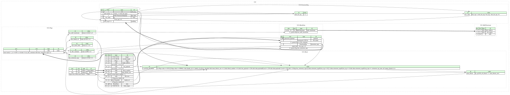

UF2 is a file format, developed by Microsoft for PXT (also known as Microsoft MakeCode), that is particularly suitable for flashing microcontrollers over MSC (Mass Storage Class; aka removable flash drive).
The list of family IDs is stored in a separate JSON file:
https://github.com/microsoft/uf2/blob/master/utils/uf2families.json
This JSON file is regularly updated. The family_id enum should be kept in
sync with it. For simplicity and consistency, it's strongly recommended to
auto-generate this enum from uf2families.json directly. This was last done
using the following commands:
$ curl -fsSLO https://github.com/microsoft/uf2/raw/90e9741f217f5a40c98ba74d663e408041037578/utils/uf2families.json
$ jq -r '
.[]
| " \(.id | ascii_downcase):\n"
+ " id: \(.short_name | ascii_downcase | gsub("-"; "_"))\n"
+ " doc: \(.description | tojson)"
' uf2families.json
Test files, picked to cover as many different shapes as possible:
num_blocks.family_id::rp2xxx_absolute block that picotool prepends (see the
is_rp2350_e10_block value instance in the block type).file_size rather
than family_id.family_id::rp2040) is moved to the end of the second file, which was
intended for family_id::rp2xxx_absolute (see
https://github.com/raspberrypi/pico-examples/blob/c81c855ffdedc825975a40ba357723a71358ddf0/universal/CMakeLists.txt#L159-L169).flags.is_file_container flag set (for
example
https://github.com/microsoft/pxt-microsoft-boot-sequence/releases/download/v0.0.4/arcade-p0.uf2
is a pure file container for
file_name == "Projects/microsoft-boot-sequence.elf"). Generated by
MakeCode, the only known producer of file container UF2s.This page hosts a formal specification of UF2 (USB Flashing Format) using Kaitai Struct. This specification can be automatically translated into a variety of programming languages to get a parsing library.

meta:
id: uf2
title: UF2 (USB Flashing Format)
file-extension: uf2
xref:
wikidata: Q105856672
license: CC0-1.0
endian: le
doc: |
UF2 is a file format, developed by Microsoft for PXT (also known as
Microsoft MakeCode), that is particularly suitable for flashing
microcontrollers over MSC (Mass Storage Class; aka removable flash drive).
The list of family IDs is stored in a separate JSON file:
<https://github.com/microsoft/uf2/blob/master/utils/uf2families.json>
This JSON file is regularly updated. The `family_id` enum should be kept in
sync with it. For simplicity and consistency, it's strongly recommended to
auto-generate this enum from `uf2families.json` directly. This was last done
using the following commands:
```bash
$ curl -fsSLO https://github.com/microsoft/uf2/raw/90e9741f217f5a40c98ba74d663e408041037578/utils/uf2families.json
$ jq -r '
.[]
| " \(.id | ascii_downcase):\n"
+ " id: \(.short_name | ascii_downcase | gsub("-"; "_"))\n"
+ " doc: \(.description | tojson)"
' uf2families.json
```
Test files, picked to cover as many different shapes as possible:
* <https://micropython.org/download/RPI_PICO/> - a typical case: all blocks
have the same family ID and `num_blocks`.
* <https://micropython.org/download/RPI_PICO2/> - these .uf2 files are
actually two UF2 files concatenated. The first UF2 file is the standalone
`family_id::rp2xxx_absolute` block that `picotool` prepends (see the
`is_rp2350_e10_block` value instance in the `block` type).
* <https://circuitpython.org/downloads> - the builds for SAMD boards (for
example
[Feather M0 Express](https://circuitpython.org/board/feather_m0_express/))
set no flags at all, so the field at offset 28 is read as `file_size` rather
than `family_id`.
* <https://github.com/raspberrypi/pico-sdk-prebuilts/releases> -
[Universal UF2](https://github.com/raspberrypi/pico-examples/blob/c81c855ffdedc825975a40ba357723a71358ddf0/universal/README.md#universal-binary-vs-universal-uf2)
files, which are again two UF2 files concatenated. What's interesting about
these is that the last block of the first file (with the family ID
`family_id::rp2040`) is moved to the end of the second file, which was
intended for `family_id::rp2xxx_absolute` (see
<https://github.com/raspberrypi/pico-examples/blob/c81c855ffdedc825975a40ba357723a71358ddf0/universal/CMakeLists.txt#L159-L169>).
* <https://github.com/microsoft/pxt-microsoft-boot-sequence/releases> - some
files contain blocks with the `flags.is_file_container` flag set (for
example
<https://github.com/microsoft/pxt-microsoft-boot-sequence/releases/download/v0.0.4/arcade-p0.uf2>
is a pure file container for
`file_name == "Projects/microsoft-boot-sequence.elf"`). Generated by
MakeCode, the only known producer of file container UF2s.
* <https://github.com/umi-eng/uftwo/tree/35bccf75b4f81c43f088696a8c4a9912f1f4104e/uftwo/tests> -
synthetic test files for features that real firmware doesn't seem to use
(e.g. MD5 checksums).
doc-ref: https://github.com/microsoft/uf2/blob/90e9741f217f5a40c98ba74d663e408041037578/README.md
seq:
- id: first_block
type: block
- id: blocks
type: block
repeat: expr
repeat-expr: first_block.num_blocks - 1
types:
block:
-orig-id: UF2_Block
-webide-representation: 'Block {block_number:dec} - {flags:flags} {family_id}'
seq:
- id: magic
-orig-id: magicStart0
contents: "UF2\n"
- id: second_magic
-orig-id: magicStart1
contents: [0x57, 0x51, 0x5d, 0x9e]
- id: flags
type: flags
- id: target_address
-orig-id: targetAddr
type: u4
valid:
expr: _ % 4 == 0
doc: |
Address in flash where `data.payload` should be written, or an offset
in the file specified by `data.file_name` if `flags.is_file_container`
is set.
The [official
spec](https://github.com/microsoft/uf2/blob/90e9741f217f5a40c98ba74d663e408041037578/README.md#payload-sizes)
says:
> In any event, payload size and target address should always be
> 4-byte aligned.
- id: len_payload
-orig-id: payloadSize
type: u4
valid:
expr: _ % 4 == 0
doc: |
The [official
spec](https://github.com/microsoft/uf2/blob/90e9741f217f5a40c98ba74d663e408041037578/README.md#payload-sizes)
says:
> In any event, payload size and target address should always be
> 4-byte aligned.
- id: block_number
-orig-id: blockNo
type: u4
- id: num_blocks_raw
-orig-id: numBlocks
type: u4
valid:
min: block_number + 1
doc: |
Number of blocks that make up the UF2 file to which this block
belongs. Every block of a file has the same value. It is at least 1
and every `block_number` in the file must be less than this value
(which is validated by this Kaitai Struct implementation).
- id: file_size
-orig-id: fileSize
type: u4
if: not flags.has_family_id
doc: |
Size of the file this block belongs to, but only if
`flags.is_file_container` is true. Otherwise, the official spec allows
this field to be set to anything - though in practice, it's always
zero.
- id: family_id
-orig-id: familyID
type: u4
enum: family_id
if: flags.has_family_id
- id: data
size: 476
type: block_data
- id: final_magic
-orig-id: magicEnd
contents: [0x30, 0x6f, 0xb1, 0x0a]
instances:
num_blocks:
value: 'is_rp2350_e10_block ? 1 : num_blocks_raw'
is_rp2350_e10_block:
value: |
(flags.value == 0x2000 or flags.value == 0xa000)
and family_id == family_id::rp2xxx_absolute
and num_blocks_raw == 2
and block_number == 0
and len_payload == 256
and data.payload.first == 0xef
and data.payload.last == 0xef
and (
not flags.has_extension_tags
or data.extension_tags[0].len_tag == 0
or (
data.extension_tags[0].len_tag == 4
and data.extension_tags[0].tag_type == extension_tag_type::rp2_ignore_block
)
)
doc: |
Determines whether this is a block that `picotool` prepends to RP2350
flash images as a workaround for erratum RP2350-E10 (i.e. a hardware
bug in the A2 version of the RP2350 boot ROM).
Such a block is always written on its own, but its `num_blocks_raw` is
set to 2. If we trusted this value, we would attempt to read one block
too many (which would most likely fail). Therefore, we must correct it
to 1 before using it.
The conditions for detecting this block come from the
[`check_abs_block()`](https://github.com/raspberrypi/picotool/blob/6f6458d792b93685a11423b244a585eaa99eafcf/elf2uf2/elf2uf2.cpp#L147)
function in `picotool`. However, there are some differences:
1. In Kaitai Struct, we cannot easily check whether all 256 payload
bytes are set to `0xef`, so we only check the first and last bytes.
2. There are .uf2 files in the wild where `flags.has_extension_tags`
is true, but there are actually no extension tags (the first and
only tag has a size of 0, which is just a terminator), so our
condition allows for this case. You can download an example of such
a .uf2 file here:
<https://github.com/neednotapply/DC32-cfw/releases/tag/1.69.13.37>
It's worth noting that we cannot require the presence of the
`extension_tag_type::rp2_ignore_block`
(`UF2_EXTENSION_RP2_IGNORE_BLOCK`) tag because the UF2 files generated
by `picotool` prior to
<https://github.com/raspberrypi/picotool/commit/78c9bd121b09399823b67ee7ea89003ca0d3315f>
don't have it. Therefore, we check whether this tag is present only if
`flags.has_extension_tags` is set.
Test .uf2 files with this special block can be downloaded from
<https://micropython.org/download/RPI_PICO2/>. Note that all the .uf2
files there are actually two UF2 (sub)files concatenated, and this
Kaitai Struct implementation parses only one at a time (so in order to
parse both, you need something like the helper spec `uf2_files.ksy`
from
<https://github.com/kaitai-io/kaitai_struct_formats/pull/542#discussion_r3906386820>).
v1.24.x releases predate the `extension_tag_type::rp2_ignore_block`
tag, while releases v1.25.0 and later include it.
doc-ref:
- https://github.com/raspberrypi/picotool/blob/6f6458d792b93685a11423b244a585eaa99eafcf/elf2uf2/elf2uf2.cpp#L147 Git tag "2.3.0"
- https://github.com/raspberrypi/picotool/commit/78c9bd121b09399823b67ee7ea89003ca0d3315f
block_data:
seq:
- id: payload
size: _parent.len_payload
doc: |
The bytes to be written to `_parent.target_address`, which is either
an address in flash, or an offset in the file specified by `file_name`
if `_parent.flags.is_file_container` is set.
- id: file_name
type: strz
encoding: UTF-8
if: _parent.flags.is_file_container
- id: extension_tags
type: extension_tag
repeat: until
repeat-until: _.len_tag == 0
if: _parent.flags.has_extension_tags
instances:
md5_checksum:
pos: _io.size - 24
type: md5_checksum
if: _parent.flags.has_md5_checksum
doc: |
Describes a region that doesn't need to be flashed again if the
checksum matches.
The [official
spec](https://github.com/microsoft/uf2/blob/90e9741f217f5a40c98ba74d663e408041037578/README.md#md5-checksum)
says that "This is currently only used on ESP32", but no real-world
firmware sample has been found (at least none of the .uf2 files from
<https://github.com/adafruit/tinyuf2/releases>,
[MicroPython](https://micropython.org/download/) or
[CircuitPython](https://circuitpython.org/downloads) contain it). It
was found only in some synthetic test files, e.g.
<https://github.com/umi-eng/uftwo/blob/35bccf75b4f81c43f088696a8c4a9912f1f4104e/uftwo/tests/checksum_256.uf2>.
extension_tag:
doc-ref: https://github.com/microsoft/uf2/blob/90e9741f217f5a40c98ba74d663e408041037578/README.md#extension-tags
-webide-representation: '{tag_type}: {len_value:dec} bytes ({len_tag:dec} total)'
seq:
- id: len_tag
type: u1
valid:
expr: _ == 0 or _ >= min_len_tag
doc: |
Total size of the tag in bytes, including this byte and `tag_type`, so
at least 4. The exception is the last tag which terminates the list -
it specifies a total size of 0.
- id: tag_type
type: b24le
enum: extension_tag_type
- id: value
size: len_value
if: len_tag != 0
- id: padding
size: -len_tag % 4
doc: |
Tags are 4-byte aligned, so a tag whose size is not a multiple
of 4 is followed by padding.
instances:
min_len_tag:
value: len_tag._sizeof + tag_type._sizeof
len_value:
value: 'len_tag >= min_len_tag ? len_tag - min_len_tag : 0'
md5_checksum:
doc-ref: https://github.com/microsoft/uf2/blob/90e9741f217f5a40c98ba74d663e408041037578/README.md#md5-checksum
seq:
- id: start_address
type: u4
- id: len_region
type: u4
- id: md5
size: 16
flags:
doc-ref:
- https://github.com/microsoft/uf2/blob/90e9741f217f5a40c98ba74d663e408041037578/uf2.h#L43-L47
- https://github.com/raspberrypi/pico-sdk/blob/98a542c1a62fb549ffb5d66a3e5892b06276b670/src/common/boot_uf2_headers/include/boot/uf2.h#L23-L27 Git tag "2.3.0"
-webide-representation: '{value}'
seq:
- id: value
type: u4
valid:
expr: |
(_ & ~0x0000_f001) == 0 and
not (is_file_container and has_extension_tags)
doc: |
Only the five bits that we cover in value instances below are defined,
and no other bit may be set. The [official
spec](https://github.com/microsoft/uf2/blob/90e9741f217f5a40c98ba74d663e408041037578/README.md#flags)
says "Currently, there are five flags defined". If any other flags are
added in the future, this .ksy spec will need to be updated.
The `is_file_container` and `has_extension_tags` flags disagree about
what follows the payload in `data` (a file name or a list of extension
tags), so this Kaitai Struct implementation treats them as mutually
exclusive and will reject a block that sets both. The official spec
does not specify how this should be handled, but logically there's a
conflict, so we've decided to strictly treat it as an error.
instances:
not_main_flash:
-orig-id:
- UF2_FLAG_NOFLASH # microsoft/uf2
- UF2_FLAG_NOT_MAIN_FLASH # raspberrypi/pico-sdk
value: value & 0x0000_0001 != 0
doc: |
Indicates that this block should be skipped when writing the device
flash. It can be used to store data that does not fit on the device,
typically embedded source code or debug info.
is_file_container:
-orig-id:
- UF2_FLAG_FILECONTAINER # microsoft/uf2
- UF2_FLAG_FILE_CONTAINER # raspberrypi/pico-sdk
value: value & 0x0000_1000 != 0
doc: |
When set, the UF2 format is used as a container for regular files
(akin to a TAR file, or ZIP archive without compression).
`target_address` is the offset in the file where the payload is to be
written, and `file_size` is the size of that file. The name of the
destination file is stored in `data.file_name`.
has_family_id:
-orig-id:
- UF2_FLAG_FAMILY_ID # microsoft/uf2
- UF2_FLAG_FAMILY_ID_PRESENT # raspberrypi/pico-sdk
value: value & 0x0000_2000 != 0
doc: |
The field at offset 28 in the block is `family_id` instead of
`file_size`.
has_md5_checksum:
-orig-id:
- UF2_FLAG_MD5_CHKSUM # microsoft/uf2
- UF2_FLAG_MD5_PRESENT # raspberrypi/pico-sdk
value: value & 0x0000_4000 != 0
doc: Indicates whether `md5_checksum` is present at the end of `data`.
has_extension_tags:
-orig-id:
- UF2_FLAG_EXTENSION_TAGS # microsoft/uf2
- UF2_FLAG_EXTENSION_FLAGS_PRESENT # raspberrypi/pico-sdk
value: value & 0x0000_8000 != 0
doc: Indicates whether extension tags are present after the payload.
enums:
extension_tag_type:
0x000000:
id: end
doc: |
According to the official spec, this type should be used in the last tag
with `len_tag == 0`, which terminates the list of extension tags.
0x9fc7bc:
id: version
doc: Version of the firmware file, as a UTF-8 semver string
0x650d9d:
id: description
doc: |
Description of the device for which the firmware file is destined
(UTF-8)
0x0be9f7:
id: page_size
doc: Page size of the target device, as a 32-bit unsigned number
0xb46db0:
id: sha2_checksum
doc: SHA-2 checksum of firmware (can be of various sizes)
0xc8a729:
id: device_type_id
doc: |
Device type identifier, a refinement of `family_id` meant to identify a
kind of device rather than only an MCU. 32-bit or 64-bit number. Can be
a hash of the `extension_tag_type::description` tag.
0x9957e3:
id: rp2_ignore_block
-orig-id: UF2_EXTENSION_RP2_IGNORE_BLOCK
doc: |
The block is to be ignored. This value doesn't come from the official
spec, but from the Raspberry Pi Pico SDK. It's written with no value, so
the whole tag is the 4 bytes `04 e3 57 99`. See the
`is_rp2350_e10_block` value instance in the `block` type.
doc-ref: https://github.com/raspberrypi/pico-sdk/blob/98a542c1a62fb549ffb5d66a3e5892b06276b670/src/common/boot_uf2_headers/include/boot/uf2.h#L46 Git tag "2.3.0"
family_id:
0x16573617:
id: atmega32
doc: "Microchip (Atmel) ATmega32"
0x1851780a:
id: saml21
doc: "Microchip (Atmel) SAML21"
0x1b57745f:
id: nrf52
doc: "Nordic NRF52"
0x1c5f21b0:
id: esp32
doc: "ESP32"
0x1e1f432d:
id: stm32l1
doc: "ST STM32L1xx"
0x202e3a91:
id: stm32l0
doc: "ST STM32L0xx"
0x21460ff0:
id: stm32wl
doc: "ST STM32WLxx"
0x22e0d6fc:
id: rtl8710b
doc: "Realtek AmebaZ RTL8710B"
0x2abc77ec:
id: lpc55
doc: "NXP LPC55xx"
0x300f5633:
id: stm32g0
doc: "ST STM32G0xx"
0x31d228c6:
id: gd32f350
doc: "GD32F350"
0x3379cfe2:
id: rtl8720d
doc: "Realtek AmebaD RTL8720D"
0x04240bdf:
id: stm32l5
doc: "ST STM32L5xx"
0x4c71240a:
id: stm32g4
doc: "ST STM32G4xx"
0x4fb2d5bd:
id: mimxrt10xx
doc: "NXP i.MX RT10XX"
0x51e903a8:
id: xr809
doc: "Xradiotech 809"
0x53b80f00:
id: stm32f7
doc: "ST STM32F7xx"
0x55114460:
id: samd51
doc: "Microchip (Atmel) SAMD51"
0x57755a57:
id: stm32f4
doc: "ST STM32F4xx"
0x5a18069b:
id: fx2
doc: "Cypress FX2"
0x5d1a0a2e:
id: stm32f2
doc: "ST STM32F2xx"
0x5ee21072:
id: stm32f1
doc: "ST STM32F103"
0x621e937a:
id: nrf52833
doc: "Nordic NRF52833"
0x647824b6:
id: stm32f0
doc: "ST STM32F0xx"
0x675a40b0:
id: bk7231u
doc: "Beken 7231U/7231T"
0x68ed2b88:
id: samd21
doc: "Microchip (Atmel) SAMD21"
0x6a82cc42:
id: bk7251
doc: "Beken 7251/7252"
0x6b846188:
id: stm32f3
doc: "ST STM32F3xx"
0x6d0922fa:
id: stm32f407
doc: "ST STM32F407"
0x4e8f1c5d:
id: stm32h5
doc: "ST STM32H5xx"
0x6db66082:
id: stm32h7
doc: "ST STM32H7xx"
0x70d16653:
id: stm32wb
doc: "ST STM32WBxx"
0x7b3ef230:
id: bk7231n
doc: "Beken 7231N"
0x7eab61ed:
id: esp8266
doc: "ESP8266"
0x7f83e793:
id: kl32l2
doc: "NXP KL32L2x"
0x8fb060fe:
id: stm32f407vg
doc: "ST STM32F407VG"
0x9fffd543:
id: rtl8710a
doc: "Realtek Ameba1 RTL8710A"
0xada52840:
id: nrf52840
doc: "Nordic NRF52840"
0x820d9a5f:
id: nrf52820
doc: "Nordic NRF52820_xxAA"
0xbfdd4eee:
id: esp32s2
doc: "ESP32-S2"
0xc47e5767:
id: esp32s3
doc: "ESP32-S3"
0xd42ba06c:
id: esp32c3
doc: "ESP32-C3"
0x2b88d29c:
id: esp32c2
doc: "ESP32-C2"
0x332726f6:
id: esp32h2
doc: "ESP32-H2"
0x540ddf62:
id: esp32c6
doc: "ESP32-C6"
0x3d308e94:
id: esp32p4
doc: "ESP32-P4"
0xf71c0343:
id: esp32c5
doc: "ESP32-C5"
0x77d850c4:
id: esp32c61
doc: "ESP32-C61"
0xb6dd00af:
id: esp32h21
doc: "ESP32-H21"
0x9e0baa8a:
id: esp32h4
doc: "ESP32-H4"
0x3101f7c1:
id: esp32s31
doc: "ESP32-S31"
0xde1270b7:
id: bl602
doc: "Boufallo 602"
0xe08f7564:
id: rtl8720c
doc: "Realtek AmebaZ2 RTL8720C"
0xe48bff56:
id: rp2040
doc: "Raspberry Pi RP2040"
0xe48bff57:
id: rp2xxx_absolute
doc: "Raspberry Pi Microcontrollers: Absolute (unpartitioned) download"
0xe48bff58:
id: rp2xxx_data
doc: "Raspberry Pi Microcontrollers: Data partition download"
0xe48bff59:
id: rp2350_arm_s
doc: "Raspberry Pi RP2350, Secure Arm image"
0xe48bff5a:
id: rp2350_riscv
doc: "Raspberry Pi RP2350, RISC-V image"
0xe48bff5b:
id: rp2350_arm_ns
doc: "Raspberry Pi RP2350, Non-secure Arm image"
0x00ff6919:
id: stm32l4
doc: "ST STM32L4xx"
0x9af03e33:
id: gd32vf103
doc: "GigaDevice GD32VF103"
0x4f6ace52:
id: csk4
doc: "LISTENAI CSK300x/400x"
0x6e7348a8:
id: csk6
doc: "LISTENAI CSK60xx"
0x11de784a:
id: m0sense
doc: "M0SENSE BL702"
0x4b684d71:
id: maixplay_u4
doc: "Sipeed MaixPlay-U4(BL618)"
0x9517422f:
id: rza1lu
doc: "Renesas RZ/A1LU (R7S7210xx)"
0x2dc309c5:
id: stm32f411xe
doc: "ST STM32F411xE"
0x06d1097b:
id: stm32f411xc
doc: "ST STM32F411xC"
0x72721d4e:
id: nrf52832xxaa
doc: "Nordic NRF52832xxAA"
0x6f752678:
id: nrf52832xxab
doc: "Nordic NRF52832xxAB"
0xa0c97b8e:
id: at32f415
doc: "ArteryTek AT32F415"
0x699b62ec:
id: ch32v
doc: "WCH CH32V2xx and CH32V3xx"
0x7be8976d:
id: ra4m1
doc: "Renesas RA4M1"
0x7410520a:
id: max32690
doc: "Analog Devices MAX32690"
0xd63f8632:
id: max32650
doc: "Analog Devices MAX32650/1/2"
0xf0c30d71:
id: max32666
doc: "Analog Devices MAX32665/6"
0x91d3fd18:
id: max78002
doc: "Analog Devices MAX78002"
0x7d7a66ef:
id: py32f071_uvk5_v3
doc: "Quansheng UV-K5 V3 amateur radio based on Puya Semiconductor PY32F071"
{kind=link}